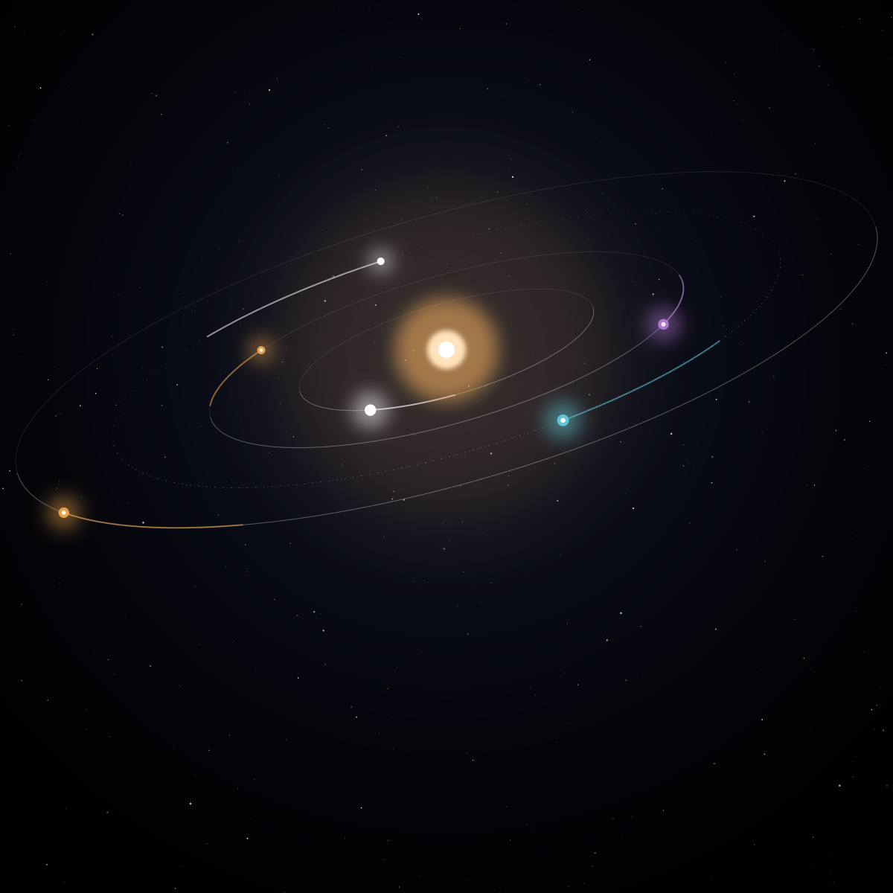

Vela
L'éditeur où les agents font le travail et où vous prenez les décisions.
Outils open source
Vela est l'éditeur où vous dirigez des agents de code tout en restant l'auteur. Sillage fait de Firefox un navigateur organisé en espaces de travail. Deux projets open source sous licence MIT, développés au grand jour.
L'éditeur où les agents font le travail et où vous prenez les décisions.
Firefox, organisé en espaces de travail. Même moteur, mêmes extensions, sans fork.

Aujourd'hui
Vela pilote Claude Code, Codex, opencode, Gemini CLI et Crush, chacun dans son propre worktree. Sillage tourne sur le Firefox officiel, avec vos extensions et Firefox Sync. Rien à migrer, rien d'enfermé.
Demain
À mesure que les agents prennent en charge le code, ce qui compte, c'est le jugement : quoi construire, quoi garder, quoi livrer. Vela est fait pour ça. Chaque changement relu, chaque check passé, chaque commit à vous.
Ouvrez une tâche.
Ses dépôts, ses liens, ses agents viennent avec.
Changez de tâche, pas de fenêtre.
Projet · éditeur
Vela : « les voiles » en latin, et une constellation du ciel austral.
Les agents écrivent une part croissante du code. Vela est l'endroit où vous les faites travailler : un espace par tâche, avec ses dépôts, ses liens et ses agents, chacun dans son propre worktree. Ils proposent, vous décidez, et rien n'atteint votre code sans vous.
Chaque agent travaille dans son propre worktree et propose des hunks. Vous acceptez, rejetez ou modifiez chacun : vous restez l'auteur de chaque ligne livrée.
Claude Code, Codex, opencode, Gemini CLI, Crush : gardez ceux que vous utilisez. Vela s'occupe de tout ce qu'il y a autour : worktrees, revue, checks, commits.
Vela affiche toujours l'action la plus utile : répondre à un agent, relire une proposition, committer. Entrée la lance.
Clavier d'abord : chaque action a sa touche, Ctrl K mène partout, Ctrl P ouvre n'importe quel fichier. Git tourne comme dans votre terminal, avec vos hooks et votre config.
Fichiers indexés, diff et checks (hooks, lint, types, tests) dans une seule vue. Les checks se relancent seuls quand l'index change, et jamais deux fois sur le même arbre.
Vela propose les commits : type et scope conventionnels déduits du diff, un découpage quand un diff en cache trois, le ticket en pied de message.
Code source En développement actif, pas encore de version publiée. Suivez l'avancée sur GitHub.
Projet · navigateur
Sillage : la trace laissée derrière soi, comme la queue d'une comète.
Inspiré d'Arc, Sillage donne à Firefox une barre latérale verticale, des espaces de travail, des profils et une palette de commandes. Ce n'est pas un fork : il installe le Firefox officiel de Mozilla et ajoute son interface au démarrage, si bien que moteur, mises à jour de sécurité, extensions et Firefox Sync restent ceux de Firefox.
Chaque espace a sa couleur, ses onglets épinglés et son profil (un conteneur Firefox) : deux comptes Google côte à côte, dans une seule fenêtre.
URL, recherche, onglets ouverts, historique et commandes dans un seul champ, avec la meilleure correspondance complétée pendant la frappe. Ctrl T.
Chaque espace a un canevas infini pour les notes, le texte, les formes et les liens. Les notes expirent et vous le rappellent, et un espace vide s'ouvre sur son tableau, jamais sur une page blanche.
Un lien s'ouvre dans une carte au-dessus de la page. Gardez-le en onglet, ou refermez-le et continuez.
Espaces, épinglés, tableaux et profils vous suivent via Firefox Sync, chiffrés de bout en bout.
Les onglets se chargent quand vous les ouvrez, les bandeaux de cookies sont refusés pour vous, et Sillage n'envoie rien de son côté, hormis une vérification quotidienne des nouvelles versions de Firefox sur macOS.
Installer (Linux x86_64 ou macOS)
git clone https://github.com/khaalipso/sillage.git
cd sillage
make install
make launchCode source Sans lien avec Mozilla ni The Browser Company.
Pas encore. Vela est en construction et n'a pas de version publiée. Le code source est sur GitHub.
Claude Code, Codex, opencode, Gemini CLI et Crush. Vela pilote ces outils existants et s'occupe de tout ce qu'il y a autour : worktrees, revue, checks et commits.
Non. Les agents travaillent dans leur propre worktree et proposent des hunks. Vous acceptez, rejetez ou modifiez chacun d'eux avant qu'il n'arrive dans le vôtre.
Rien n'est perdu. Les espaces sont des branches et des git worktree standards :
n'importe quel outil git sait les lire.
Non. Sillage installe un Firefox officiel non modifié et injecte son interface au démarrage. Moteur, mises à jour de sécurité, extensions et Firefox Sync restent ceux de Mozilla.
Linux x86_64 et macOS.
Vos espaces et tableaux sont stockés dans votre profil Firefox. Sillage ne fait aucune requête réseau propre, hormis les suggestions de votre moteur de recherche par défaut (si elles sont activées dans Firefox), Firefox Sync quand vous êtes connecté et, sur macOS, une vérification quotidienne des nouvelles versions de Firefox.
Ouvrez une issue sur khaalipso/vela ou khaalipso/sillage. Les contributions sont les bienvenues.
Les deux projets sont développés sur GitHub. Ouvrez une issue, proposez une idée ou envoyez une pull request.